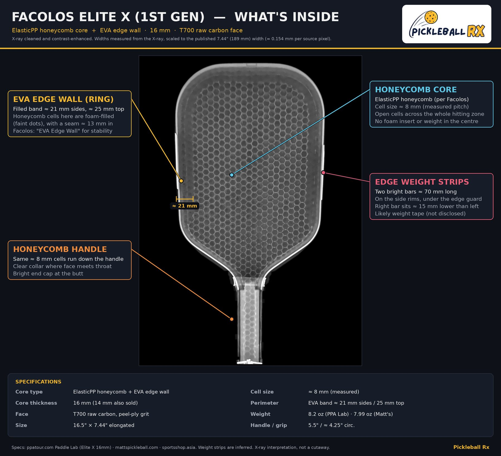
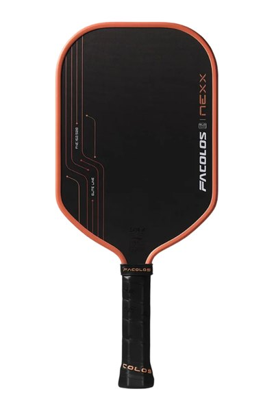
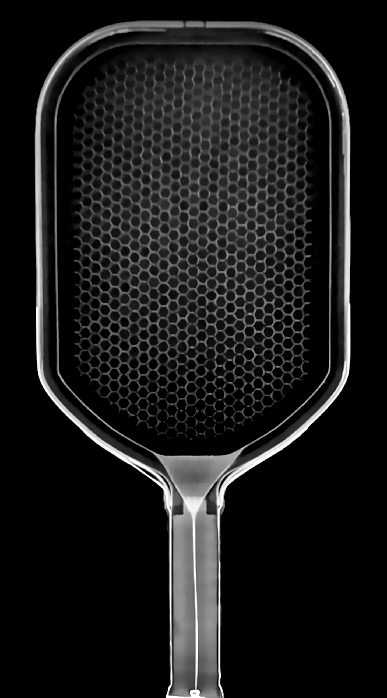

Facolos Elite X (1st gen)
ElasticPP honeycomb + EVA edge wall
See inside →
ElasticPP (polypropylene) honeycomb. EVA edge wall ≈ 12 mm (cells from ≈ 23 mm).
| Core | ElasticPP (polypropylene) honeycomb |
| Cells | ≈ 6.8 mm (measured from X-ray) |
| Perimeter | EVA edge wall ≈ 12 mm (cells from ≈ 23 mm) |
| Thickness | 16 mm |
The Facolos Nexx 16mm is a 16 mm elongated pickleball paddle from Facolos. Our X-ray shows the core: ElasticPP (polypropylene) honeycomb. Perimeter: EVA edge wall ≈ 12 mm (cells from ≈ 23 mm). Face: Multidirectional T700 raw carbon, grit. Weight: 8.18 oz measured · 7.9–8.3 oz listed.
Labels are our read of the X-ray, not a cutaway. Measurements are approximate. Disclaimers.

The same X-ray with no labels, so you can read it yourself.

| Core type | ElasticPP (polypropylene) honeycomb |
|---|---|
| Cell size | ≈ 6.8 mm (measured from X-ray) |
| Core thickness | 16 mm |
| Perimeter | EVA edge wall ≈ 12 mm (cells from ≈ 23 mm) |
| Face | Multidirectional T700 raw carbon, grit |
| Weight | 8.18 oz measured · 7.9–8.3 oz listed |
| Size | 16.6" × 7.25" measured, elongated |
| Handle / grip | 5.875" / 4.125" circ. (measured) |
Specs: facolos.au (NEXX), thepickleballstore.co.uk (Facolos Nexx), mattspickleball.com (NEXX 16mm lab data). Cell size and widths are measured, not published. X-ray interpretation, not a cutaway.. Ring widths are measured from the X-ray, so they are estimates (≈).

ElasticPP honeycomb + EVA edge wall
See inside →
ElsFoam™ (Elastic Foam™) + AVF Tech
See inside →